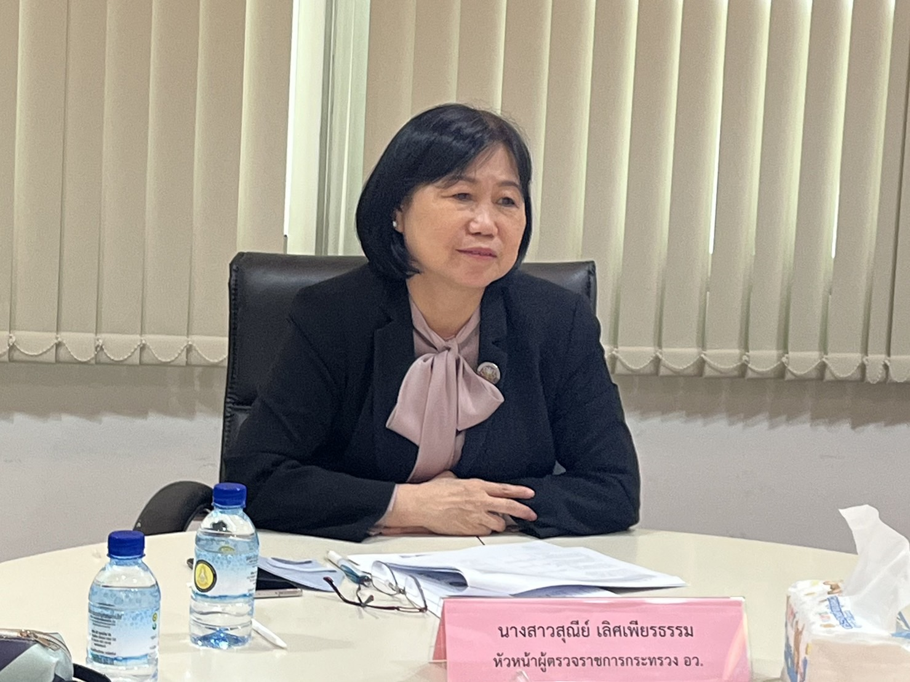
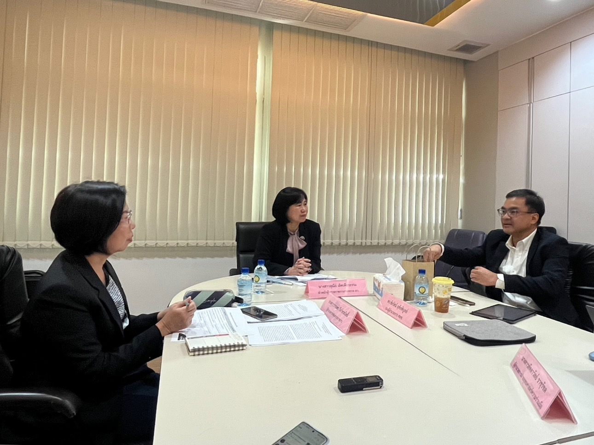

หัวหน้าผู้ตรวจราชการกระทรวง ตรวจราชการโครงการพัฒนาธุรกิจและส่งเสริมการตลาดสำหรับอุตสาหกรรมการแพทย์และสุขภาพของไทยเข้าสู่ตลาดสากล ของศูนย์ความเป็นเลิศด้านชีววิทยาศาสตร์ ณ ห้องประชุม กยผ. ชั้น ๕ อาคารพ ...
เมื่อวันที่ 20 กันยายน 2566 เวลา ๐๙.00 น. – 1๒.๐0 น. นางสาวสุณีย์ เลิศเพียรธรรม หัวหน้าผู้ตรวจราชการกระทรวง กระทรวงการอุดมศึกษา วิทยาศาสตร์ วิจัยและนวัตกรรม (อว.) และคณะ ตรวจราชการโครงการพัฒนาธุรกิจและส่งเสริมการตลาดสำหรับอุตสาหกรรมการแพทย์และสุขภาพของไทยเข้าสู่ตลาดสากล ของศูนย์ความเป็นเลิศด้านชีววิทยาศาสตร์ (องค์การมหาชน) โดยมี ดร.ชัยรัตน์ อุทัยพิบูลย์ รองผู้อำนวยการศูนย์ความเป็นเลิศด้านชีววิทยาศาสตร์ นางสาวลัดดาวัลย์ ราชุรัชต ผู้อำนวยการฝ่ายยุทธศาสตร์ความร่วมมือ และนางสาวปาลิตา ขุนพลพิทักษ์ เจ้าหน้าที่อาวุโสงานยุทธศาสตร์ความร่วมมือ รายงานผลการดำเนินการโครงการในการสนับสนุนและส่งเสริมผู้ประกอบการ และผู้ให้บริการในกลุ่ม Thailand Life Sciences Cluster และเครือข่ายพันธมิตร ในด้านการผลิตสารสกัดธรรมชาติที่มีมูลค่าสูง รวมถึงนวัตกรรมและผลิตภัณฑ์ทางการแพทย์อื่นๆ อีกทั้งสร้างความพร้อมให้กับผู้ประกอบการให้สามารถเข้าสู่ตลาดต่างประเทศได้ ในการนี้ นางสาวสุณีย์ เลิศเพียรธรรม ได้กล่าวชื่นชมและให้กำลังใจผู้ดำเนินโครงการและศูนย์ความเป็นเลิศด้านชีววิทยาศาสตร์ ที่สนับสนุนและให้โอกาสผู้ประกอบการและผู้ให้บริการภาคเอกชน ในการก้าวสู่ตลาดต่างประเทศและหาผู้ร่วมทุนใหม่จากต่างประเทศ เพื่อสร้างความร่วมมือและขยายเครือข่ายกลุ่มเป้าหมายในอนาคต
 